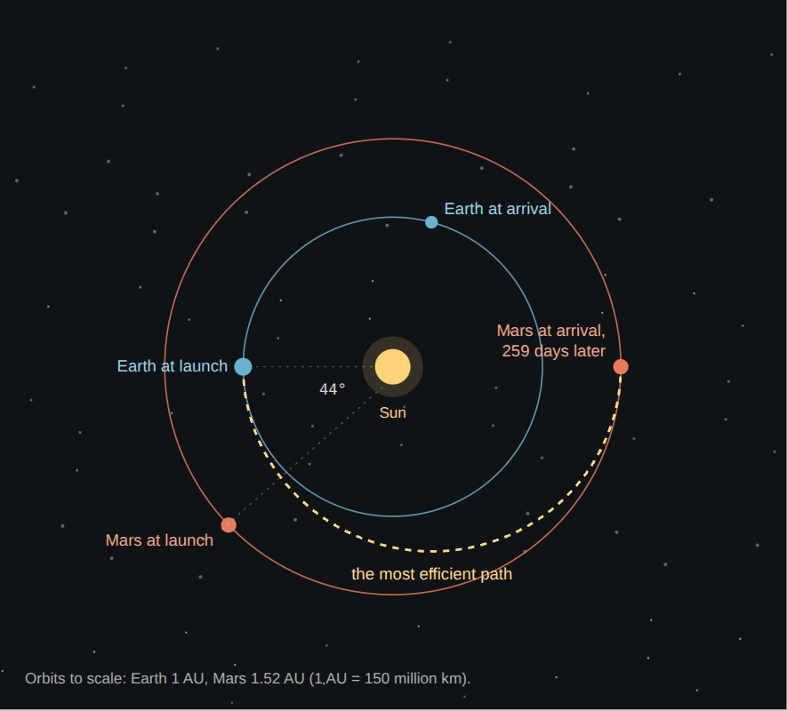

Mars in space
Where Mars is and how it moves: an oval orbit half as far again from the Sun as Earth's, a day 40 minutes longer, a tilt that wanders over the ages, two small moons, and a sky in which Earth is the evening star.
The orbitOval, and far from the Sun
Mars circles the Sun between 207 and 249 million km out, 1.38 to 1.67 times Earth's distance. Its orbit is more oval than Earth's, so its sunlight changes a lot through the year: 717 W/m² above the air at its nearest, 493 at its farthest, 586 on average, against 1,361 for Earth.
A year lasts 687 Earth days, or 668.6 sols. The southern summer comes when Mars is nearest the Sun: short and hot, and the season of dust storms.
The sol. Mars turns once in 24 h 37 min against the stars, and a sol, from noon to noon, lasts 24 h 39 min 35 s. It is so close to Earth's day that rover teams have lived on Mars time for months at a stretch, coming to work 40 minutes later each day.
The tilt. Mars' axis tilts 25.2°, close to Earth's 23.4°. But Earth's tilt is steadied by our large Moon, and Mars has none: over millions of years its tilt has swung widely, perhaps from near 0° to more than 60°. At high tilt the poles warm and their ice moves to the middle latitudes; this is thought to be how the buried ice of the mid-latitudes was laid down, in Mars' ice ages.
Earth and MarsEvery 26 months, close
Earth, on the inside track, laps Mars every 780 days, about 26 months. Then the planets are closest, and Mars is bright in Earth's night sky. The distance between them ranges from 55 million km to 401 million km; on 27 August 2003 it came to 55.76 million km, the closest in nearly 60,000 years.
Radio, at the speed of light, takes 3 to 22 minutes each way. When Mars passes behind the Sun as seen from Earth, every 26 months, contact drops for about two weeks.
Launch windows follow the same rhythm: the cheapest path to Mars, half an ellipse round the Sun, works only when Mars is about 44° ahead of Earth, once every 26 months. See getting there.

The moonsPhobos and Deimos
Phobos is a dark, lumpy moon 27 by 22 by 18 km, only 6,000 km above the ground. It circles Mars in 7 h 39 min, faster than Mars turns, so it rises in the west and sets in the east, twice a day. Tides are pulling it slowly down: in about 30 to 50 million years it will break up into a ring.
Phobos often passes in front of the Sun, a quick partial eclipse that the rovers have filmed.
Deimos is smaller, 15 by 12 by 11 km, and 20,000 km up. It takes 30 hours to go round, so it seems to hang in the sky for days; from the ground it looks like a bright star.
Both may be pieces of a giant impact on Mars, or asteroids it captured. Their gravity is less than a thousandth of Earth's, so landing on them and leaving again take almost no fuel.
The sky from MarsThe Sun smaller, Earth a star
The Sun looks about two-thirds as wide as it does from Earth. The stars and constellations are the same. Earth is a bright blue evening or morning star, never far from the Sun, with the Moon beside it; Curiosity photographed the pair from Gale crater in 2014. At night Phobos crosses the sky from west to east, and Deimos creeps the other way.
SourcesWhere the numbers come from
- NASA Goddard Space Flight Center, Mars Fact Sheet (D. R. Williams): orbit, distances, sunlight, the sol and the year, tilt, the moons.
- J. Laskar and others (2004), Long term evolution and chaotic diffusion of the insolation quantities of Mars. Icarus 170, 343; J. W. Head and others (2003), Recent ice ages on Mars. Nature 426, 797. doi:10.1038/nature02114
- NASA (2003): Mars makes its closest approach in nearly 60,000 years.
- NASA Goddard (2015): Phobos is slowly falling apart.
- NASA/JPL-Caltech/MSSS/TAMU (2014): Curiosity's photograph of Earth and the Moon from Mars; NASA/JPL-Caltech/ASU (2022): Perseverance films Phobos crossing the Sun.